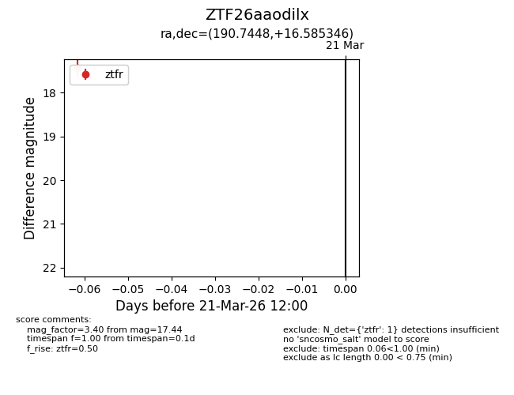
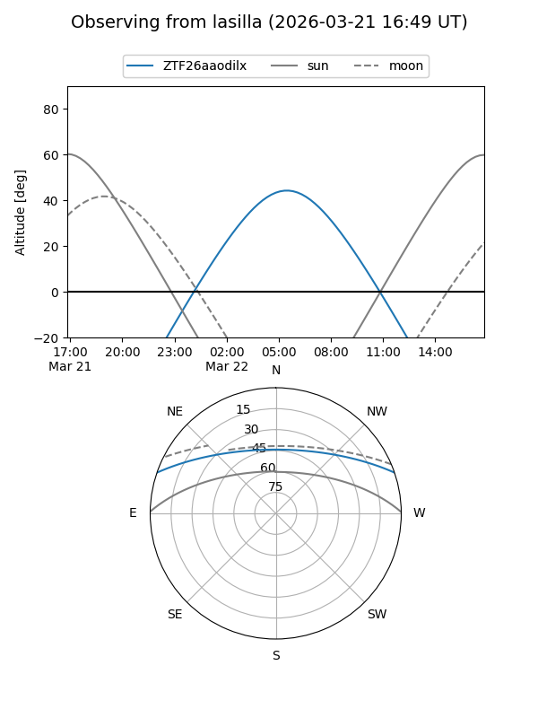
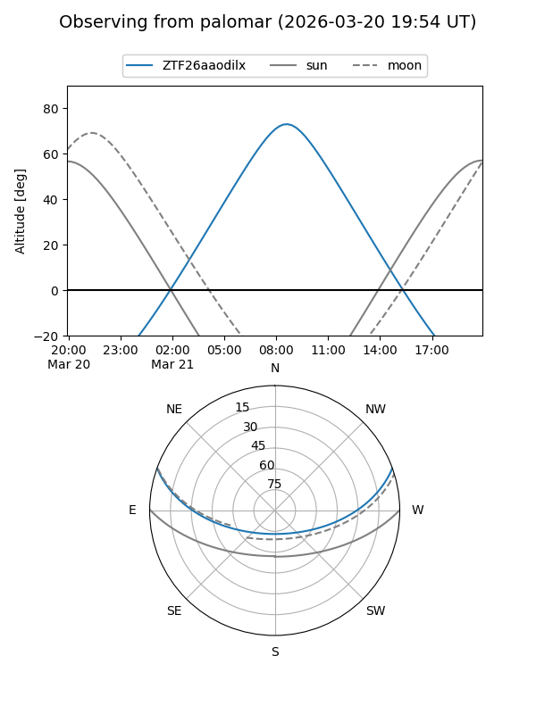

ZTF26aaodilx
Target ZTF26aaodilx at 2026-03-21 12:02
Aliases and brokers:
FINK: link
Lasair: link
ALeRCE: link
alt names
ZTF26aaodilx (ztf,fink_ztf)
Coordinates:
equatorial (ra, dec) = 190.7448,+16.58535
equatorial (HMS+DMS) = 12:42:58.76,+16:35:07.24
galactic (l, b) = (291.9756,+79.27673)
Flags:
Photometry:
last ztfr=17.44
1 ztfr detections
Lightcurve

Visibility


Additional plots